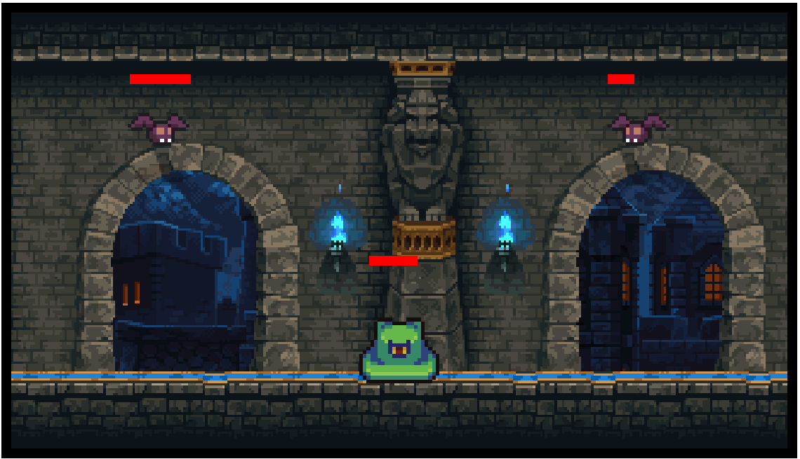
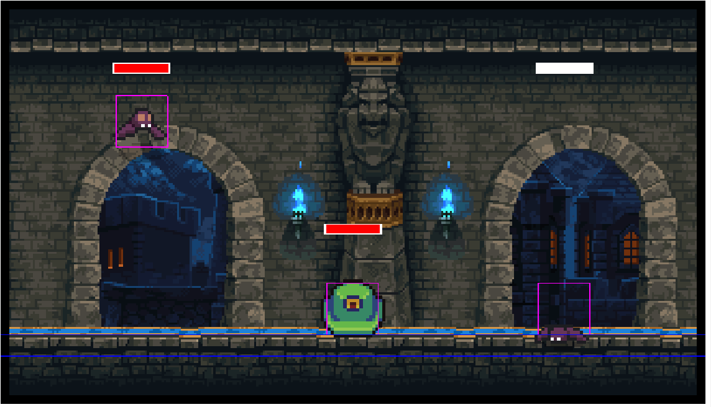

Realiza estos ejercicios en orden incremental. Solo es necesario entregar el último mediante un zip de todo el proyecto.
Recuerda que puedes consultar la documentación (por ejemplo, PhaserLab, API de Phaser, la MDN…), realizar búsquedas en Internet, etc.
Crea un carpeta y en su interior genera la siguiente estructura: -ejercicioPhaser -lib -phaser.js -assets - castle.gif -css -game.css -src -scenes -maingame.js -enemies -enemy.js -game.js
-index.htmlTambién puedes añadir la carpeta types y el jsconfig visto en clase y en los ejemplos del campus.
El archivo index.html debe contener lo siguiente:
<!DOCTYPE html>
<html lang="es">
<head>
<meta charset="UTF-8">
<link rel="stylesheet" href="./css/game.css">
<script src="./lib/phaser.js"></script>
<title>¡Juego con Phaser!</title>
</head>
<body>
<h1>Ejercicio opcional Phaser</h1>
<div id='juego'></div>
<script src="./src/game.js" type="module"></script>
</body>
</html>Vamos a ver ahora que debemos tener en game.js:
import Maingame from './scenes/maingame.js';
/**
* Creamos el archivo de configuración del juego y creamos
* la clase Game de Phaser, encargada de crear e iniciar el juego.
* Doc: https://newdocs.phaser.io/docs/3.86.0/Phaser.Types.Core.GameConfig
*/
let config = {
type: Phaser.AUTO,
parent: 'juego', //ID del elemento del DOM en el que se anidará el Canvas que genere Phaser, si no, por defecto, irá al final del body
width: 656,
height: 376,
pixelArt: true,
scale: {
autoCenter: Phaser.Scale.CENTER_HORIZONTALLY, //Le decimos que se centre en pantalla
// Configuramos phaser para que se adapte al tamaño de pantalla donde ejecutadmos
// con un mínimo y un máximo de tamaño
mode: Phaser.Scale.FIT,
min: {
width: 328,
height: 188
},
max: {
width: 1312,
height: 752
},
zoom: 1
},
scene: [Maingame], //Aquí metemos todas las escenas que tendrá nuestro juego (su clase, luego cambiaremos de una a otra mediante el id)
physics: {
default: 'arcade', //Tenemos físicas simple, arcade
arcade: {
gravity: { y: 200 }, //Tenemos gravedad, podemos modificarla para aumentar su fuera o disminuirla
debug: true // Aquí indicamos si queremos que Phaser pinte los cuerpos y fuerzas de los objetos con físicas
},
checkCollision: {
up: true,
down: true,
left: true,
right: true
}
},
title: "ejercicio opcional",
version: "1.0.0"
};
/*
Instanciamos Phaser con la configuración deseada, Phaser se encargará de lanzar la primera escena del array de escenas
*/
new Phaser.Game(config); Lo siguiente es crear nuestra escena Maingame en la
carpeta scenes:
/**
* Escena principal de juego.
* @extends Phaser.Scene
*/
export default class Animation extends Phaser.Scene {
constructor() {
super({ key: 'maingame' });
}
init(){
}
/**
* Carga de recursos
*/
preload(){
this.load.image('castle', 'assets/castle.gif');
}
/**
* Creación de los elementos de la escena principal de juego
*/
create() {
this.add.image(0, 0, 'castle').setOrigin(0, 0);
}
update(time, dt){
}
}Vamos a usar los módulos de Javascript, por lo que debemos acceder a nuestra web a través de un servidor. Para ello, instala Node.js y abre una terminal en la raiz del proyecto (donde se encuentra el index.html) para ejecutar:
npx http-serverEsto deberia abrir un servidor en local, donde se servirá el proyecto
que estamos creando, y al que podrás acceder con
locahost:8080 (u otro puerto que te indicará la terminal
donde ejecutaste el comando). Si abrimos esta dirección en nuestro
navegador, deberiamos ver ya el juego de Phaser con nuestro
castillo.
Lo primero será crear un archivo enemy.js dentro de
/src/enemies/ con esta pinta:
export default class Enemy extends Phaser.GameObjects.Sprite {
/**
* Constructor de Enemigo
* @param {Scene} scene - escena en la que aparece
* @param {number} x - coordenada x
* @param {number} y - coordenada y
* @param {number} y - coordenada y
*/
constructor(scene, x, y, life, defense, texture, frame) {
super(scene, x, y, texture, frame); //En la doc de Phaser (https://newdocs.phaser.io/docs/3.86.0/Phaser.GameObjects.Sprite) veremos que
/* el contructor de Sprite recibe 5 parámetros, siendo el último opcional (en la documentación se indica con[])
el contructor de prite recibe:
scene - Phaser.Scene - The Scene to which this Game Object belongs. A Game Object can only belong to one Scene at a time.
x - number - The horizontal position of this Game Object in the world.
y - number - The vertical position of this Game Object in the world.
texture - string | Phaser.Textures.Texture - The key, or instance of the Texture this Game Object will use to render with, as stored in the Texture Manager.
frame - string | number <optional> - An optional frame from the Texture this Game Object is rendering with.
*/
this.life = life; //La vida total que tendrá el enemigo.
this.defense = defense; //La defensa que tendrá el enemigo, reducirá el daño de cada ataque.
this.scene.add.existing(this); //Nos añadimos a la escena para ser mostrados.
}
/**
* Bucle principal del personaje, actualizamos su posición y ejecutamos acciones según el Input
* @param {number} t - Tiempo total
* @param {number} dt - Tiempo entre frames
*/
preUpdate(t, dt) {
// Es muy imporante llamar al preUpdate del padre (Sprite), sino no se ejecutará la animación
super.preUpdate(t, dt);
}
/**
* Método al que se llamará cuando muera el enemigo
*/
die(){
}
/**
* Método llamado para golpear al enemigo.
* @param {number} damage - daño recibido, al que se aplicará una reducción por la defensa que tengamos.
*/
hit(damage){
this.life -= (damage - this.defense);
console.log(this.life);
}
}El siguiente paso es importar nuestro archivo enemy.js en el archivo maingame.js e instanciar nuestro enemigo desde la escena con:
// this es la escena
// vamos a posicionarlo en el centro del canvas con this.sys.game.canvas.width*0.5, this.sys.game.canvas.height*0.5
// nuestro enemigo va a tener 20 de vida y 1 de defensa
// además vamos a pintarlo con un spritesheet que tendremos que haber cargado antes en el método preload y cuyo id será 'bat'. Lo primero que pintaremos es el primer frame (frame 0)
new Enemy(this, this.sys.game.canvas.width*0.5, this.sys.game.canvas.height*0.5, 20, 1, 'bat', 0);Cuidado, como estamos llamando a una textura ‘bat’ por lo que
tendremos que haberla precargado en nuestra escena mediante por
ejemplothis.load.spritesheet('bat', 'assets/batIdle.png', {frameWidth: 32, frameHeight: 32}).
Si hemos importado bien la clase Enemy y hecho la carga de la textura ‘bat’, ahora deberemos ver dicho enemigo en el navegador si recargamos la página. Cuidado, podemos tener la página cacheada en nuestro navegador, lo mejor es hacer ctr+f5 para recargar y limpiar la página cacheada.
Ahora debemos crear dos enemigos nuevos que extiendan de
Enemy, por ejemplo vamos a crear las clases
Bat y a Slime. Por ejemplo Bat
tendrá esta pinta:
import Enemy from "./enemy.js";
export default class Bat extends Enemy{
constructor(scene, x, y){
super(scene, x, y, 20, 1, 'bat', 0); //Todos nuestros murciélagos tendrán 20 de vida y 1 de defensa. Estamos llamando al constructor de Enemy, que a su vez llamará al de Sprite de Phaser
}
preUpdate(){
super.preUpdate();
//Aquí podríamos dar un movimiento especial a nuestro murciélago
}
die(){
super.die();
//Aquí podríamos dar una muerte diferente a la de un enemigo común, lanzando alguna animación especial o explotando y haciendo daño a en emigos adyacentes....
}
}Ahora vamos a animar a nuestro murciélago creando una animación antes para poder llamarla, en nuestra escena haremos por ejemplos:
this.anims.create({
key: 'bat_idle',
frames: this.anims.generateFrameNumbers('bat', {start:0, end:3}),
frameRate: 5,
repeat: -1
});En la documentación tenemos más información en Phaser.Animations.AnimationManager#create y Phaser.Types.Animations.Animation.
Ahora, al final del constructor de Bat podemos hacer
this.play('bat_idle'). Todos los Sprites de Phaser pueden
llamar a play, y ejecutar cualquier animación creadas. Recordad que
estas son comunes a todo el juego.
Ahora debéis crear a Slime e instanciar ambos en la
escena Maingame en vez de instanciar a
Enemy
Ahora, queremos poder derrotar a estos enemigos que hemos creado.
Para ello, vamos a hacer que el objeto Sprite
(todos los Enemy) sea, interactuable con
sprite.setInteractive().
Si hemos hecho esto bien, desde la escena, cuando instanciamos los
enemigos podremos escuchar el evento pointerdown para
quitarles vida con por ejemplo:
bat.on("pointerdown", ()=>{bat.hit(12)}) //bat es una variable donde hemos guardado el `Bat` instanciado en la escenaEsto deberia mostrar por consola la vida restante del enemigo si le golpeamos (pulsamos en él). Y debemos hacer lo mismo con el resto de enemigos que pongamos en pantalla.
Ahora toca añadir el feedback visual. Para ello vamos añadir barras
de vida y haremos que el enemigo se ponga en rojo cuando le golpeamos
(pulsamos en él). Lo primero, y más sencillo es hacer que el enemigo se
ponga rojo. Para ello usaremos la propiedad tintde todos
las imagenes y sprites de Phaser:
hit(damage){
this.life -= (damage - this.defense);
console.log(this.life);
this.setTint(0xffff0000) //color ARGB
}Pero ahora tenemos un problema, nuestro enemigo quedará en rojo. Esto
lo vamos a solucionar con los timersde Phaser:
hit(damage){
this.life -= (damage - this.defense); //this es nuestro murciélago
console.log(this.life);
this.setTint(0xffff0000) //color ARGB
this.scene.time.addEvent({
delay: 500,
callback: ()=>{this.setTint(0xffffffff)} //después de 0.5 segundos modificamos a un tinte blanco que dejará la imagen igual
})
}Ahora nos queda crear las barras de vida de nuestro enemigos. Para
ello vamos a usar la clase Phaser.GameObjects.Rectangle,
que nos permite dibujar rectángulos de colores.
Nuestra clase para las barras de vida tendrá esta pinta:
export default class LifeBar extends Phaser.GameObjects.Rectangle{
constructor(scene, x, y){
super(scene, x, y, 50, 8, 0xffff0000) // esto crea un rectángulo rojo de 50x8 px
scene.add.existing(this) // y lo añadimos a la escena
}
preUpdate(t, dt){ //podemos aprovechar este método para crear animaciones de la barra de vida.
}
}El resultado debería ser algo similar a lo siguiente:

Ahora, podemos añadir animaciones de muerte, y hacer algunas mejoras visuales para que se vea el rectángulo de vida original. También podríamos jugar con colores de la barra según la vida e incluso añadir físicas que hicieran que nuestro enemigos voladores cayeran al suelo al morir.
Vamos a añadir físicas a nuestros enemigos, para que se vean afectador por la gravedad y tengan colisiones. Esto lo hacemos desde el enemigo con:
this.scene.physics.add.existing(this); //this es la escenaA partir de este momento, nuestro enemigo tendrá la propiedad
body, su cuerpo físico que además podemos cambiar de tamaño
si lo necesitamos con:
this.body.setSize(16,16) //this es el objeto murciélagoUna vez nuestros objetos tienen físicas, debemos indicar que objetos chocan con que otros objetos. Además, podemos pasar una función como callback para realizar cambios en nuestro juego en el momento en que Phaser detecta dicha colisión. Por ejemplo, teniendo creado el suelo, desde la escena podemos hacer:
this.physics.add.collider(floor, bat, ()=>{console.log("he pisado suelo")}); //con esto indicamos que suelo y muciélago colisionan, y si sucede, se llama a la función callback pasada como tercer parámetro (prodíamos no pasar función)Podéis echarle un ojo a la documentación y mirar ejemplos.
También podemos hacer que un objeto no se vea afectado por la gravedad aunque tenga físicas, por ejemplo, no queremos que nuestro murcielago caiga por la gravedad hasta que no muera. Eso podemos hacerlo con:
this.body.setAllowGravity(true); //this es el objeto murciélago
Para ir terminando, vamos a convertir esto en un juego. La idea es tener una pantalla de título y 3 niveles de juego. La escena de título tendrá un botón START, luego tendremos 3 niveles. El primer nivel tendremos que matar 1 murciélago, en el segundo nivel 2 de ellos. Y por último, en el tercer nivel nos encontraremos con 3 murciélagos y un limo (con más vida y defensa que los murciélagos).
En Phaser, podemos pasar de una escena a otra con scene.start:
this.scene.start("maingame") //el primer parámetro es el identificador de la escena, el dado en el constructor, como segundo parámetro podemos pasar iformación que recibiremos en la función init()La idea es que cuando matemos a todos los enemigos de una escena, pasemos al siguiente nivel. Después de 3 niveles completos, podemos mostrar un mensaje de haber ganado o volver a la escena de título.